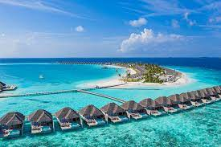

Kelionių pasiūlymai
Kelionė į maldyvus
Atostogos Maldyvuose stebint delfinus! Skrydis su „Turkish Airlines” ir poilsis privačioje saloje, 4* viešbučio viloje su „premium viskas įskaičiuota“
Tikiu, kad užklupus šaltiems orams, ne vienas pagalvoja, kaip būtų gera atsidurti ten, kur džiugina saulė ir šiluma, kur gali mėgautis poilsiu paplūdimyje ir maudynėmis šiltame vandenyne. Keliauk į Maldyvus, čia apsistosi „Adaaran Select Hudhuran Fushi“ viešbučio viloje, iš kurios paplūdimį ir Indijos vandenyną pasieksi vos keliais žingsniais. Pasinaudok proga ir leiskis į išvykas, kurios jau įskaičiuotos į kelionės kainą! Išvykų metu galėsi stebėti nuostabaus grožio saulėlydžius ar pasisveikinti su vandenyno gyventojais - delfinais!
Autonuomos pasiūlymai
Mūsų automobiliai
| Automobilio markė | Nuotrauka | Nuomos trukmė | ||
|---|---|---|---|---|
| 1d. | 3d. | 7d. | ||
| Wolkswagen Golf |
 |
50€ | 120€ | 200€ |
| Wolkswagen Tiguan |

|
70€ | 130€ | 220€ |
| Wolkswagen Arteon |

|
80€ | 140€ | 230€ |
Patarimai keliaujantiems
Keliautojo patarimai
- Užsiregistruokite viešbučio kambarį iš anksto.
- Pasirūpinkite, kad turėtumėte vietinių valiutų.
- Pasitikrinkite oro temperatūrą ir susipakuokite tinkamą aprangą.
- Suplanuokite savo kelionę ir lankytinas vietas.
- Pasiimkite kopijas svarbių dokumentų ir kelionių draudimo informacijos.
Daugiau patarimų
- Pasiimkite kelionės vaistų rinkinį.
- Susiraskite vietinės šalies elektros adapterį.
- Nusipirkite kelionės draudimą.
- Stenkitės išmokti keletą vietinių frazių.
- Atkreipkite dėmesį į vietinius papročius ir etiketą.
Kelionių žurnalas
Kokios trukmės atostogos idealiausios?

Ar pažįstate tą jausmą, kai viską atiduotumėte už papildomas kelias dienas paplūdimyje, ant banglentės ar tiesiog tinginiaudami? O gal atsimenate atostogas, kuriose paskutines dienas jau laukėte grįžimo namo? Vesdamas ir organizuodamas turus sutikau pačių įvairiausių keliautojų. Štai atpažįstamos atostogautojų grupės, kurioms net kelioms priklausau ir aš pats.
Vieni iš mūsų negali pagalvoti apie gulėjimą paplūdimyje ir net kurorte turi kažką veikti, judėti, pamatyti. Kiti per atostogas nori kuo daugiau žmonių ir veiksmo, treti - tylos ir ramybės bei gamtos, ketvirtiems užtenka turėti internetą ir po palme paskrolinti, penkti dirba darbą savo nuotykius publikuodami socialiniuose tinkluose, šešti ypač ilgesnėse kelionėse antroje atostogų pusėje iš tiesų pradeda ilgėtis namų, savo lovos, šeimos, draugų, maisto, klimato ar net darbo.
Kur dar mano bičiuliai metų metus klajojantys po pasaulį ir derinantys darbus su gyvenimu kelyje. Juos pasivyti bando progresyvios kompanijos organizuojančios darbostogas. Taip atsiranda ir dar viena grupė keliautojų, kurie niekada iki galo neatsitraukia nuo darbų atostogose ir atvirkščiai - visą laiką gyvena darbostogų ritmu.
O ką sako mokslininkai? Koks idealiausias atostogų laikas, trukmė ir būdas? Pabandykime atrasti aukso vidurį kartu.
Ideali kelionių ir atostogų trukmė
Tiesiai šviesiai, mažiausiai tai turėtų būti 8 dienos. Idealiausiai - 11 dienų atostogų. O 14-16 dienų su skrydžiais gerai suplanuotų kelionių nuotykių - tai aukso vidurys tarp pamatytos šalies, išbandytų veiklų, subalansuoto lėtesnio keliavimo ir užtektinai poilsio prieš ir po kelionės.
Nemažai tyrimų apie atostoginių kelionių įtaką mūsų sveikatai parengė Suomijos universitetai. Helsinkio ir Tamperės mokslininkai jau daug dešimtmečių bando atrasti formulę, kokios yra idealiausios atostogos mūsų fizinei ir psichologinei sveikatai.
Rezultatai aiškiai rodo, kad tik 8-tą kelionės dieną mes pradedame visiškai pasinerti į vietą, kurioje esame, jaučiame didžiausią atostogų pasitenkinimą. Ir tai tęsiasi iki 11-tos atostogų dienos. Vėliau, jei kelionės planas, užimtumas nesikeičia - atostogų nuotaika gana staigiai blėsta, mes priprantame prie aplinkos, kad ir kokia neįprasta ji bebūtų, prisitaikome prie atostogų ritmo ir po truputi mintimis pradedame grįžti į darbus, prie reikalų namuose.

Todėl 11-tą kelionės dieną verta arba keisti kelionės ritmą, aplinką, arba pradėti kelionę namo. Tai nuolat sau sakau ir ilsėdamasis, ir organizuodamas keliones kitiems. Todėl dviejų savaičių nuotykiai ir egzotinės kelionės geriausiai pasiteisina tada, kai yra balansas tarp veiklų, gamtos, miestų, kultūros pažinimo ir visiško poilsio paplūdimyje ar kitoje ramioje vietoje.
Moksliškai įrodyta, kad pačios neefektyviausios atostogos yra tarp 4-6 dienų. Nekalbame apie savaitgalio artimas išvykas, tačiau rinkdamiesi trumpas atostogas atidžiai pasižiūrėkite, ar verta imti 4 dienų (ypač tolimesnę) kelionę. Ji patraukli tik tuo, kad suteikia pasitenkinimo perkant pigius bilietus, planuojant pačią išvyką, o realiai nuvykus į vietą ne visada pateisina lūkesčius.
Geriausias tokių kelionių pavyzdys - pigių oro linijų skrydžiai du kartus į savaitę į daugelį Europos kampelių. Pavyzdžiui, sekmadienį galite pigiai nuskristi iki Islandijos ir jau ketvirtadienį grįžti atgal. Skamba viliojančiai, tačiau iš tiesų, pamatysite tik Reikjaviko apylinkes arba prasėdėsite automobilyje bandydami aplėkti kuo daugiau. Tik pradėję įsijausti, jau turėsite skristi atgalios, o grįžus namo reikalai užgrius tuo pačiu ritmu, tarsi po ilgesnio savaitgalio. O jei dar blogi orai sugadino pusę trumpų atostogų? Būsite nei pakartas, nei paleistas. Ką jau kalbėti apie tvarumą, atsakomybę ir lėtesnį keliavimą, kurį neišvengiamai turėsime rinktis norėdami nors kažkiek sumažinti poveikį klimato kaitai.
Dažnai būtent pigūs skrydžiai diktuoja kelionės trukmę ir tai sukrenta į 7 dienų kelionės planą. Vis dėlto, net ir tokiu atveju pasilikite sau laiko namuose pasimėgauti kelionės atsiminimais vėlyvą rytą su kavos puodeliu rankoje. Tos papildomos poilsio dienos praverčia po bet kurios ilgesnės kelionės.
O kaip trijų savaičių ir ilgesnės kelionės?
Yra pasaulio kraštų, pavyzdžiui, Naujoji Zelandija, Japonija, Kanada, Argentina, kurioms aplankyti teks skristi labai toli ir brangiai. Aklimatizuotis prie laiko juostos užtruks vieną ar dvi dienas prieš kelionę ir po jos.
Ir iš savo patiries Rytų Afrikoje, Filipinuose bei kitose pasaulio vietose galiu užtikrintai pasakyti, kad būtent šios kelionės labiausiai įsirėžia į atmintį. Trijų savaičių turas Kenijoje net kelis kartus pavyko taip, kad nebebuvo nei ko pridėti, nei atimti. Antra vertus, 18-19-ta kelionės diena - tai būtent tas laikas, kai daugeliui ateina antrasis nuotaikos kritimas ir jau tikras namų ilgesys. Atsiranda nuovargis nuo nuotykių ar net gulėjimo paplūdimyje, ir čia net masažai, pasikeitęs kelionės ritmas ar keičiamos valstybės nebepadeda. Keliautojų dopamino lygis mažėja, mintys nevaldomai pakrypsta link namų.
Ne paskutinėje vietoje ir grupės psichologija - keliaujant didesnėje ar mažesnėje grupėje tris savaites su tais pačiais žmonėmis, nenoromis gali atsirasti trintis.
Todėl trijų savaičių keliones verta rinktis, kai per metus turite daugiau nei mėnesį atostogų ir galite sau leisti dėl nuotykio šiek tiek pasikankinti. Arba jei turite tam tikrą užduotį, kuri atitraukia visas mintis, pavyzdžiui, kopimas į kalną, nardymo pamokos, savanorystė bendruomenėje. Žinoma, yra tolimų pasaulio krypčių, kurias lankote vieną kartą gyvenime ir per dvi savaites nespėjate pamatyti nė mažos dalies. Tokiu atveju bet kokie nepatogumai ilgoje kelionėje bus pamiršti.
Kaip pailsėti kelionėje?
Kaip keliauti, kad pailsėtumėte?
Dar žymus Lietuvos tarpukario keliautojas Matas Šalčius, parašęs savo įspūdingą kelionių knygą
Svečiuose pas 40 tautų
yra sakęs: Planuoti kelionę - pats didžiausias džiaugsmas, keliauti - tikras darbas, o atsiminimai iš kelionės yra viso gyvenimo atpildas.
Šią taisyklę mes dažnai labai stipriai permaišome. Kelionės planavimą ir pasiruošimą iš viso užmirštame, o jei planuojame, tai nerimaujame dėl viešbučių ar lėktuvo užsakymų, kylančių kainų, reikalingų vizų ar skiepų. Prie to prisideda ir milžiniškas kelionių organizatorių, veiklų, viešbučių, krypčių pasirinkimas. Kad ir ką pasirinktume, viskas atrodys nepakankama. Ką jau kalbėti, kad nelieka laiko pasidomėti ta kryptimi į kurią keliaujame, paskaityti knygų, pasižiūrėti filmų ir kitos informacijos. Dažnai daiktus krauname paskutinę minutę ir jau tada tikimės atsigriebti kelionėje.
O tai tarsi parako statinė susprogti neišsipildžiusiems lūkesčiams. Pirmomis dienomis sėdime savanoje ar spalvingiausiame miesto turguje ir vis dar nervinamės, kad nėra interneto, bet reikia atsakyti į degančius laiškus. Ir net jei tai viskas įskaičiuota viešbutis su internetu ir nemokamais kokteiliais - dar blogiau. Liekame su savo darbais ir mintimis įkalinti prie baseino, kažkur už tūkstančių mylių nuo savo aplinkos. Suima nerimas. Tada ir oras per vėsus ar per karštas, vietos žmonės per daug nedraugiški, kelionės programa per daug sugrūsta ar per mažai veiklų įsiplanavome, o galiausiai ir šiaip viskas per daug brangu.
Net jei 11-tą egzotiškų atostogų dieną pasiekiame šiokį tokį nusiraminimą, pradedame kelti atostogų vaizdus į socialinius tinklus, atsipalaiduojame… Tada pasidžiaugiame paskutiniu saulėlydžiu kelionėje - jau laikas vykti atgal į darbus.

Keli konkretūs patarimai, kaip tinkamai pailsėti kelionėje
Visų šių patarimų esmė labai panaši į anksčiau pacituotą M. Šalčiaus pasakymą. Jau prieš šimtą metų lietuvių keliautojas parodė įžvalgą ir davė kelionių receptą ir šiems laikams.
- Pasidžiaukite kelionės planavimo procesu. Dabar jau šiuolaikinės studijos įrodė, kad kelionės laukimas, planavimas ir aktyvus domėjimasis būsimomis atostogomis gali atnešti ne mažiau laimės nei pačios atostogos.
- Balansuokite kelionės nuotykius ir aktyvias veiklas su atsipalaidavimu. Kiekvienoje kelionėje pasilikite laiko poilsiui po atostogų. Idealiausias planas - 10-11 dienų aktvyvios veiklos ir 3-4 dienos ramesnio laiko po palme, SPA ar prie vandenyno.
- Didesnę dalį kelionės aktyviai veikite (tik ne tai ką dirbate realiame gyvenime). Nesvarbu, ką mėgstate, tačiau pasistenkite užsiimti ta veikla dalies atostogų metu - sportuokite skirtingose pasaulio vietose, pieškite naujus kraštovaizdžius, fotografuokite įspūdžius, gaminkite ir ragaukite maistus, o didžiausią pasitenkinimą pajusite, jei kažką naujo pramoksite, praplėsite savo komforto ribas.
- Atsijunkite nuo darbo. Bet iš tikrųjų. Jei be to negalite, susiplanuokite vietą ir laiką kelionėje, kurios metu periodiškai pasitikrinsite elektroninį paštą. Idealu jei savaitę būsite kalnuose ar džiunglėse, kur interneto signalas bus labai silpnas.
- Pasilikite laiko sugrįžti į ritmą. Daugelis apklausų rodo, kad į darbus mes šokame tiesiai iš atostogų - vos ne su paplūdimio šortais į ofisą. Sugrįžimas, tai tas rytinis lėtas kavos puodelis išsikraunant daiktus, prisimenant geriausias kelionės akimirkas ir žiūrint mėgstamą serialą prieš grįžtant į darbus kitą dieną.
- Prisiminkite ir įprasminkite savo kelionių nuotykius. Suredaguokite nuotraukas, išspausdinkite kelionių nuotraukų albumą, susikvieskite draugų pasidalinti įspūdžiais, socialiniuose tinkluose pasidalinkite atsiminimais ir įžvalgomis, pasidalinkite atsiliepimais su kelionių organizatoriais ir vietos gidais, palaikykite ryšius su aplankytoje šalyje sutiktais vietos žmonėmis ir grupės nariais, galiausiai surinkite lėšų egzotiško kaimelio, kurį lankėte, bendruomenės projektui.
Juk kelionės atsiminimai ir yra didžiausia gerų atostogų dovana. Įrodytas ir dar vienas dalykas - bent trys savaitės aktyvių atostogų per metus praiilgina gyvenimo trukmę ir pagerina sveikatą.
Atostogos Kenijoje: kur pavalgyti Dianio kurorte?
Restoranas prabangesniam vakarui prie vandenyno „Nomad“

Pradedu iš karto nuo prabangiausios, jaukiausios ir tikrai vienos geriausių vietų visame Dianio kurorte „Nomad“ restorano. Tai įvairiausių patiekalų virtuvė - meniu rasite ir sušių, ir picų, ir jautienos kepsnių, tačiau labiausiai čia rekomenduoju žuvies patiekalus. Kardžuvės, tuno ar tiesiog dienos laimikio patiekalai - puikiai paruošti, neperkepti. Be to, čia puikiai plaka įvairiausius kokteilius. Šalia klasikinių kokteilių siūlyčiau paragauti Dawa. Tai Kenijos mochito versija. O dawa - suahili kalba reiškia vaistus. Taigi ir kokteilis yra iš džino arba degtinės, toniko arba sodos vandens, laimo, šiek tiek imbiero ir medaus.
Be to, „Nomad“ restorane be maisto dar gausite ir malonų aptarnavimą, bei staliukus tiesiai į vandenyną. Beveik kiekvieną vakarą čia užsisakius iš anksto galima sėdėti ant minkštasuolių vos ne tiesiai paplūdimyje. O šalia visko restorano teritorija turi ir puikių suvenyrų krautuvėlių, kai kada čia vyksta didesnės mugės. Puiki vieta ir vakarui, ir dienai, ir paskutinei vakarienei prieš skrydį namo, ir pirmam apsilankymui.
Pigi vieta paragauti šviežių jūros gėrybių: „Sir William's Grill Seafood Cafe“

Kenija tikrai turi dideles valgymo užeigų tradicijas. Vos ne kiekviename didesniame mieste ar kaimelyje galima užtikti užeigas ir valgyklas, kartu ir mėsines, kurių iškabos skelbia „hotel“. Tik ten tikrai ne viešbučiai, o nuo senų laikų prilipęs valgymo užeigos, užkandinės bendrinis pavadinimas.
Vienas iš tokių hotelių - snakryžoje stovinti trobelė „Sir William's Grill Seafood Cafe“ - čia verta keliauti vien dėl autentikos. Tokios vietos dažnai migruoja ir persikelia iš vietos į vietą. Anksčiau vienas labai geras restoranėlis buvo po baobabo medžiu pačiame paplūdimyje, dabar jis suprastėjo, o estafetę perėmė kiti.
Skrudinti kalmarai, dieną sugauta žuvis, grilintos milžiniškos krevetės, keptas aštunkojis ir netgi šviežiai sumedžioti langustai. Tiesa, pastarųjų nei skonis kažkuo dieviškas, nei labai atsakinga juos valgyti. Pakrantės vandenyse gyvenantys langustai ir taip jaučia labai didelį spaudimą iš žvejų ir medžiotojų ir jų kiekvienais metais čia vis mažiau. Tad geriau rinkitės krevetes.
Šalia žuvies čia galėsite paragauti ir tradicinių Kenijos pakrantės padažų su pomidorais, svogūnais, kalendra, čiliu ir kitais prieskoniais. Taip pat tradicinių čiapati blynų. „Tusker“ alus ar limonadai - ir jau puiki tradicinė neprabangi vakarienė.
Nors gali pasirodyti apšepusi, tačiau tokioje vietelėje yra ir vandens rankoms nusiplauti, ir viskas šviežia, neseniai pagauta, ir termiškai apdorota, dažniausiai tiesiai ant ugnies. Tad skrandžio problemų rizika ne didesnė, nei kitose Kenijos pakrantės vietose.
Automobilio nuoma Islandijoje. Patarimai
Pagrindiniai incidentai
Nuomojant automobilį tikrai verta šiek tiek investuoti į papildomą draudimą. Kelios priežastys, kodėl:
- Vėjas. Vairuodami Islandijoje atkreipkite dėmesį į vėją - jis lengvai gali išlaužti dureles ar trinktelėti į kitą automobilį jas atidarant stovėjimo aikštelėje. Dėl tos pačios priežasties, esant vėjauotai dienai, stenkitės pastatyti automobilius atokesnėje vietoje, kad ir jūsų kas netyčia neužkliudytų.
- Be draudimo gali tekti padengti islandiškas remonto išlaidas už nulaužtas ar kitų įlenktas automobilio dureles. Ir patikėkite, beveik visi keliautojai bent po vieną kartą kelionėje pamiršta prilaikyti dureles išlipdami iš automobilio, o durelės arab atlaiko (dažniausiai), arba ne.
- Dėl vėjo verta pagalvoti ir ne apie patį mažiausią automobilį. Staiga kelyje užklupusios audros Islandijoje gali tiesiogine to žodžio prasme apversti automobiliuką, ar bent jau nupūsti į šalikelę. Pavyzdžiui, romantiškojo Suzuki Jimmny džipuko Islandijoje buvo iš viso atsisakyta būtent dėl to, kad pučiant stipriam vėjui, tai buvo vienas nestabiliausių automobilių, dažniausiai apvirstančių posūkyje.
- Lavos akmenys. Dar vienas pavojus - nuo žemės pakeliami ne tokie jau ir maži akmenėliai, juodas paplūdimių žvyras, kuris patekus į audringą orą, gali tiesiog suvarpyti kėbulą mažais įlenkimais. Islandijoje beveik nėra medžių, o didelė dalis kelių driekiasi palei žvarbaus vandenyno pakrantę. Todėl visada pasitikrinkite orų prognozes ir užsisakykite draudimą nuo kėbulo pažeidimų.

Islandijos keliai

Islandijos keliai skirstomi į esfaltuotus, žvyrkelius ir F (kalnų) kelius. Pirmi du variantai dažniausiai pravažiuojami ir mažesniais automobiliais, tačiau blogu oru yra įrengti atitvarai, kuriais taip pat užveriama pavojingesnė kelio atkarpa. Jokiu būdu neapvažinėkite atitvarų, stenkitės išsiaiškinti, kas užrašyta įspėjimo ženkluose, nes važiuojant tokiais keliais net ir apdrausta mašina - atsitikus eismo įvykiui draudimas negalius.
Didelė dalis įdomių Islandijos krioklių, ledynų, kanjonų pasislėpę atokiau nuo pagrindinio kelio. Privažiuoti prie tokių objektų taip pat kartais reikia kirsti aštrios susitingusios lavos kelius, islandiškus žvyrkelius. O kartais ir F raide pažymėtus kalnų kelius. Šiems keliams iš nuomos kompanijos turite turėti sutikimą ir dažniausiai 4x4 džipą. Su mažesniais autmobiliais pravažiuoti dažniausiai draudžiama. O ir daugelis kelių žiemos sezonu iš viso uždaromi.
Ir čia dar nekalbame apie šalies centre esančius kelius, kuriuos raiko ledynų upės, išplauti skardžiai ar iki vasaros išsilaikančios sniego pusnys. Jei savo GPS programėlėje matote nelabai aiškų kelią - geriau jį aplenkite.
Metų laikai ir vairavimas
Žiemą Islandijoje reikia būti labai atidiems, nes net arti miesto esasntys geri keliai gali tapti apledėję ar užpustyti. Ką jau kalbėti apie keliuką į kalnus. Pavasarį reikia pasisaugoti, kad nenutrenktumėte į kelią išeinančių avių su ėriukais. Vasarą visi pagrindiniai Islandijos keliai ir stovėjimo aikštelės tiesiog prigrūstos turistinių automobilių, todėl stenkitės vairuoti atsakingai, laikydamiesi atstumo, atsargiai lenkdami ir atidžiai stebėdami kelio ženklus. Ruduo - didelių vėjų metas, kai vieną minutę šviečią saulę, kitą - jau atsidūrėte audoroje.
Nuomos kompanijos kontaktai
Susipažinęs su šalies išskirtinumais ir pavojai keliuose, įsigyję brangų draudimą, galite pakankamai ramiai leistis į kelią. Tik nepamirškite apžiūrėti automobilių, nusifotografuoti įbrėžimų ar įlenkimų - beveik visi Islandijos automobiliai jų turi. Taip pat turėkite nuomos kompanijos kontaktus, kad galėtume išsikviesti pagalbą ekstra atveju. Na, o jei šiek tiek taupote ir pasiėmėte minimalų draudimą arba trečiųjų šalių draudimą - būkite pasiruošę dideliems užstatams, milžiniškoms išlaidoms atsitikus eismo įvykiui ir ilgu popierių tvarkymu.